Getting started with eegUtils and the N170
Matt Craddock
09/02/2022
Source:vignettes/single_subj_N170/N170_single_subject.Rmd
N170_single_subject.Rmd## ── Attaching core tidyverse packages ──────────────────────── tidyverse 2.0.0 ──
## ✔ dplyr 1.1.4 ✔ readr 2.1.5
## ✔ forcats 1.0.0 ✔ stringr 1.5.1
## ✔ ggplot2 3.5.1 ✔ tibble 3.2.1
## ✔ lubridate 1.9.3 ✔ tidyr 1.3.1
## ✔ purrr 1.0.2
## ── Conflicts ────────────────────────────────────────── tidyverse_conflicts() ──
## ✖ dplyr::filter() masks stats::filter()
## ✖ dplyr::lag() masks stats::lag()
## ℹ Use the conflicted package (<http://conflicted.r-lib.org/>) to force all conflicts to become errors##
## Attaching package: 'eegUtils'
##
## The following object is masked from 'package:stats':
##
## filterIn this tutorial, we’ll be going through the analysis of a single dataset from the ERP Core N170 data.
We’ll be using the data from a single subject. If you don’t have the data already, you can download it from the Open Science Framework or alternatively download all of the data using the erpcore package.
Note that some understanding of EEG processing is assumed - we won’t go through the justification for many of the steps or reasons for choosing particular parameters, just the mechanics of actually doing them.
Standard preprocessing
Let’s consider the steps we need to take to process our dataset. We will broadly follow the steps taken by the ERP Core team in their analysis of this data.
- Importing the data
- Downsampling from 1024 Hz to 256 Hz.
- Rereference to the average reference.
- Perform a high-pass filter at .1 Hz.
- Epoching around the stimulus events.
- Artefact rejection
Importing the data
The data is stored in EEGLAB’s .set format.
We can import that using the import_set() function. After
importing, we add some standard channel locations - we overwrite those
included in the original file, which are actually all missing values
rather than coordinates!
We’ll use the data from “sub-003”.
# Set up basic file locations
sub_file <- "sub-003_task-N170_eeg.set"
single_data <- import_set(file_name = sub_file,
participant_id = "sub-003")## Importing from EEGLAB .set file.## Importing data from .fdt file.
single_data <- electrode_locations(data = single_data,
overwrite = TRUE)## Electrodes not found: HEOG_left HEOG_right VEOG_lower
# browse_data(single_data) uncomment this line to use the data browser!The function informs us that some electrodes don’t have matching locations in our standard set. These are the HEOG and VEOG electrodes. This isn’t something to worry about.
Since the .set file only contained data with a
single epoch, it’s imported as a continuous, eeg_data
object. It has 33 electrodes, and a sampling rate of 1024 Hz. It is also
unreferenced.
We could start our preprocessing now, but before we do anything else, we have to attend to something important. According to the ERP Core documentation, there was a delay of 26 ms between the onset of the trigger and the onset of the visual stimulus. We need to modify the event codes stored in the data to compensate for this delay.
Fixing the event codes.
To make sure our ERPs are correctly timed, we need to modify the triggers, shifting them 26 ms later in time. The safest way to do that is going to be shift everything by whatever number of samples corresponds closest to 26 ms. The sampling rate of this data is 1024 Hz, which translates to one sample every 0.977 ms. Divide 26 by this, and we have 26.624 samples. It works out nicely around a sample per ms, given that we have a 1024 Hz sampling rate, but of course that would differ if we had a different sampling rate!
In the ERP Core scripts, they take the floor of this, so
shift the triggers by 26 samples.
Events coded in the data can be inspected directly using the
events() function. Let’s take a look.
events(single_data)## # A tibble: 642 × 4
## event_type event_onset urevent event_time
## <dbl> <dbl> <dbl> <dbl>
## 1 202 3101 1 3.03
## 2 202 4854 2 4.74
## 3 56 9207 3 8.99
## 4 201 9728 4 9.50
## 5 137 10725 5 10.5
## 6 201 11072 6 10.8
## 7 144 12193 7 11.9
## 8 201 12620 8 12.3
## 9 71 13711 9 13.4
## 10 201 14094 10 13.8
## # ℹ 632 more rowsThe important one here is event_onset. This tells us in
samples when the event code was sent, while
event_type tells us what the code was.
event_time is the time in seconds from the start
of the recording that the event code was sent.
Note that they only shift the stimulus onset triggers. We’ll do the same here, using some base R code to modify only those triggers with values from 1 to 80 or from 100 to 180, which correspond to stimulus onset triggers.
sample_shift <- floor(26 / (1000/single_data$srate)) # round down
orig_events <- events(single_data)
orig_events$event_onset <-
with(orig_events,
ifelse(event_type %in% c(1:80,
100:180),
event_onset + sample_shift,
event_onset))
orig_events$event_time <- (orig_events$event_onset - 1) * (1/1024)
events(single_data) <- orig_events
events(single_data)## # A tibble: 642 × 4
## event_type event_onset urevent event_time
## <dbl> <dbl> <dbl> <dbl>
## 1 202 3101 1 3.03
## 2 202 4854 2 4.74
## 3 56 9233 3 9.02
## 4 201 9728 4 9.50
## 5 137 10751 5 10.5
## 6 201 11072 6 10.8
## 7 144 12219 7 11.9
## 8 201 12620 8 12.3
## 9 71 13737 9 13.4
## 10 201 14094 10 13.8
## # ℹ 632 more rowsNow that we’ve done that initial step, let’s look at what else we need to.
Downsampling
ERP Core downsample from 1024 Hz to 256 Hz. We can use the
eeg_downsample() for that. We need to tell it how much to
downsample. We pass the q argument to give it a
downsampling factor. 1024 / 4 is 256. We’ll do this first to speed up
subsequent steps.
Note that for this step, we probably want to use multiple processor
threads or cores to speed things up. We can do that via the
future library. Simply load the future
library, then make an appropriate plan() to use your
computer’s parallel processing capabilities. We only need to do this
once - all subsequent steps will use parallel processing where they can.
You definitely want to do this before filtering or downsampling, which
can take quite a long time otherwise.
single_data <- eeg_downsample(data = single_data,
q = 4)## Downsampling from 1024Hz to 256Hz.Referencing
ERP Core reference to the average of all EEG electrodes. We can do
this with the eeg_reference() function. We can specify
which electrodes to reference to using the ref_chans
argument. By default, the function will use the average of all
electrodes if we don’t tell it otherwise, but we can also be explicit
and use the special keyword “average”.
single_data <- eeg_reference(data = single_data,
ref_chans = "average")Filtering
The ERP Core perform a high-pass Butterworth IIR filter at .1 Hz, with a 12 dB/octave roll-off (filter order 2). It removes very low-frequency activity, long slow drifts, from the data. This is applied as a non-causal filter - run forwards and then backwards - to prevent temporal shifts in the data.
The eeg_filter() function can be used for high-pass,
low-pass, bandpass or bandstop filtering. Which one is used depends on
the low_freq and high_freq arguments. These
mark the low and high passband edges respectively. If we supply only the
low_freq argument, we are asking for a high-pass filter -
everything above that low edge is passed. The frequency we specify is
the half-amplitude, 3 dB cutoff point. We can ask for iir
or fir filters using the method argument. In
addition, we probably want to demean the data before
high-pass filtering.
Note that this is done to the continuous data to prevent edge artefacts creeping in, which can be a problem when the data is epoched.
single_data <- eeg_filter(data = single_data,
low_freq = .1,
method = "iir",
order = 2,
demean = TRUE)## High-pass IIR filter at 0.1 Hz## Effective filter order: 4 (two-pass)## Removing channel means...Epoching
Now we have our high-pass filtered, continuous data. Our next step will be to epoch it. Here we diverge from the ERP Core pipeline. At this point, they perform an Independent Component Analysis on the data and use it for artefact rejection. We’ll hold back on that until after epoching.
We can use the epoch_data() function to create epochs.
We need to supply the function with the relevant timelocking events. In
this case, those are event codes from 1 to 80 and from 101 to 180. These
codes tell us exactly which stimulus was presented on each trial. The
stimuli from 1 to 40 are Intact Faces, from 41 to 80 are Intact Cars,
from 101 to 140 are Scrambled Faces, and from 141 to 180 are Scrambled
Cars.
Let’s use epoch_data() to create epochs that last from
200 ms before stimulus onset until 800 ms after stimulus onset. We won’t
perform baseline correction just yet. Note that it is possible to label
the epochs when using epoch_data() using the
epoch_labels argument. You have to supply one label for
each event code. Here, there are 160 event codes. Fortunately, it is
quite easy to construct an appropriate character vector using the
rep() function. I use it here to create a vector with 40 of
each combination of the two variables - Intact_Faces, Intact_Cars,
Scrambled_Faces, Scrambled_Cars.
epoched_data <- epoch_data(single_data,
events = c(1:80,
101:180),
time_lim = c(-.2, .8),
baseline = "none",
epoch_labels = rep(
c("Intact_Faces",
"Intact_Cars",
"Scrambled_Faces",
"Scrambled_Cars"),
each = 40)
)## Adjusting output limits to match sampling rate.## Output limits: -0.19921875 0.80078125## No baseline removal performed.## Creating 320 epochs.
epoched_data## Epoched EEG data
##
## Number of channels : 33
## Number of epochs : 320
## Epoch limits : -0.199 - 0.801 seconds
## Electrode names : FP1 F3 F7 FC3 C3 C5 P3 P7 P9 PO7 PO3 O1 Oz Pz CPz FP2 Fz F4 F8 FC4 FCz Cz C4 C6 P4 P8 P10 PO8 PO4 O2 HEOG_left HEOG_right VEOG_lower
## Sampling rate : 256 Hz
## Reference : averageThis creates 320 epochs. We can inspect metadata for the epochs using
the epochs() function, which will show us information like
the participant_id and the label for each epoch. This is an
important structure, as it allows us to easily compare different
conditions later on using functions like plot_timecourse(),
and helps us keep track of which data belongs to which participant when
we have group data.
epochs(epoched_data)## # A tibble: 320 × 5
## epoch participant_id recording event_type epoch_labels
## <dbl> <chr> <chr> <dbl> <chr>
## 1 1 sub-003 sub-003_task-N170_eeg 56 Intact_Cars
## 2 2 sub-003 sub-003_task-N170_eeg 137 Scrambled_Faces
## 3 3 sub-003 sub-003_task-N170_eeg 144 Scrambled_Cars
## 4 4 sub-003 sub-003_task-N170_eeg 71 Intact_Cars
## 5 5 sub-003 sub-003_task-N170_eeg 163 Scrambled_Cars
## 6 6 sub-003 sub-003_task-N170_eeg 4 Intact_Faces
## 7 7 sub-003 sub-003_task-N170_eeg 143 Scrambled_Cars
## 8 8 sub-003 sub-003_task-N170_eeg 124 Scrambled_Faces
## 9 9 sub-003 sub-003_task-N170_eeg 178 Scrambled_Cars
## 10 10 sub-003 sub-003_task-N170_eeg 23 Intact_Faces
## # ℹ 310 more rowsNow, we know our design is a design. We have two variables: Intact or Scrambled stimuli, and images of Faces or Cars.
Let’s use some tidyverse magic to split our
epoch_labels column into two variables that code for this
structure. This is straightforward, since the values of the column use
_ to separate the values of each factor.
epochs(epoched_data) <-
separate(
epochs(epoched_data),
col = epoch_labels,
into = c("Intact",
"Type")
)
epochs(epoched_data)## # A tibble: 320 × 6
## epoch participant_id recording event_type Intact Type
## <dbl> <chr> <chr> <dbl> <chr> <chr>
## 1 1 sub-003 sub-003_task-N170_eeg 56 Intact Cars
## 2 2 sub-003 sub-003_task-N170_eeg 137 Scrambled Faces
## 3 3 sub-003 sub-003_task-N170_eeg 144 Scrambled Cars
## 4 4 sub-003 sub-003_task-N170_eeg 71 Intact Cars
## 5 5 sub-003 sub-003_task-N170_eeg 163 Scrambled Cars
## 6 6 sub-003 sub-003_task-N170_eeg 4 Intact Faces
## 7 7 sub-003 sub-003_task-N170_eeg 143 Scrambled Cars
## 8 8 sub-003 sub-003_task-N170_eeg 124 Scrambled Faces
## 9 9 sub-003 sub-003_task-N170_eeg 178 Scrambled Cars
## 10 10 sub-003 sub-003_task-N170_eeg 23 Intact Faces
## # ℹ 310 more rowsAnd BOOM! We have our nicely epoched dataset for a single participant. We’re not quite finished, as we should do some artefact rejection. But let’s quickly do a few exploratory plots with this data.
Exploratory plots
We’ll start off with some topographical plots. We know this data is
meant to show the N170, and from the ERP Core papers we know this is
maximal in this data from approximately 130-150 ms after stimulus onset.
So let’s plot the topography for each condition at that time.
eegUtils represents time in seconds.
The topoplot() function produces a ggplot2
object. Here we’ll use facetting to display different topographies for
each condition. Note that we have to explicitly enable this by adding a
groups argument and specifying which variables we want to
group on.
epoched_data <- rm_baseline(epoched_data,
c(-.1, 0))## Baseline: -0.1 - 0s
topoplot(epoched_data,
time_lim = c(.13, .15),
groups = c("Intact",
"Type"),
limits = c(-10, 10)) +
facet_grid(Intact~Type)## Creating epochs based on combinations of variables: participant_id Intact Type## Using electrode locations from data.## Removing channels with no location.## Plotting head r 95 mm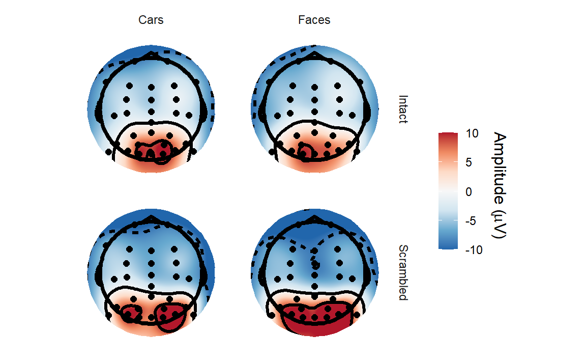
It’s a little tricky to make out much of a difference between conditions, although it’s clear that amplitudes are higher over the occipital electrodes.
Let’s create a butterfly plot showing the ERP for every channel, all
at once. We can use the plot_butterfly() function to do
that.
plot_butterfly(epoched_data)## Creating epochs based on combinations of variables: participant_id Intact Type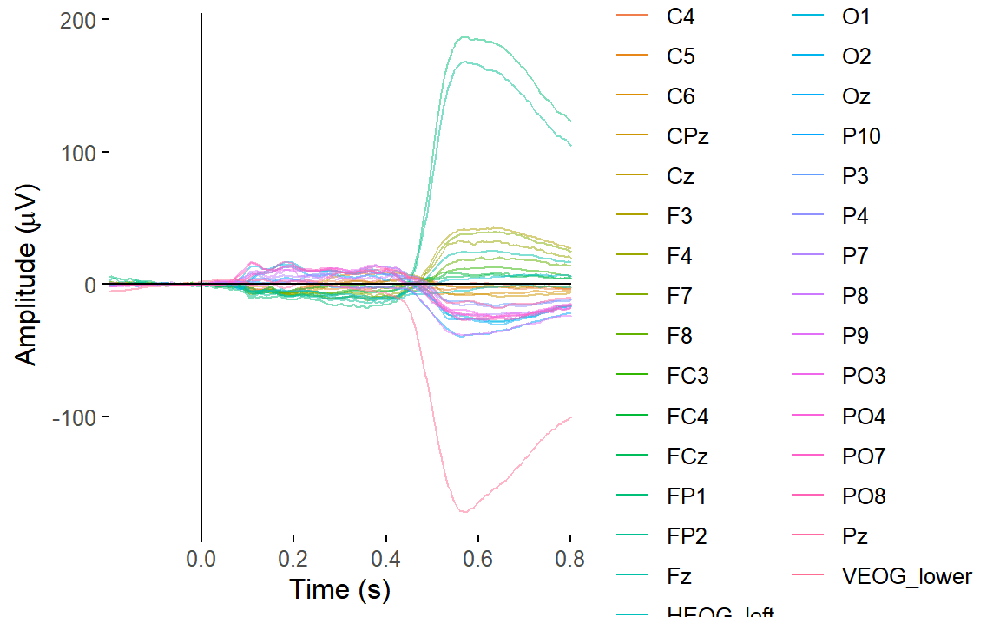
You can clearly see some channels have great big signals relative to everything else. These channels are capturing blinks and saccades. We’d expect that on the HEOG and VEOG related channels, which are closest to the eyes.
Let’s plot one of the VEOG and one of the HEOG channels.
plot_timecourse(
epoched_data,
electrode = "VEOG_lower",
baseline = c(-.1, 0)
)## Baseline: -0.1 - 0s## Creating epochs based on combinations of variables: participant_id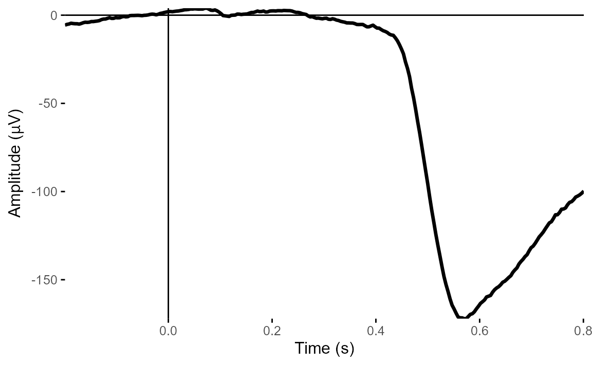
plot_timecourse(
epoched_data,
electrode = "HEOG_left",
baseline = c(-.1, 0)
)## Baseline: -0.1 - 0s
## Creating epochs based on combinations of variables: participant_id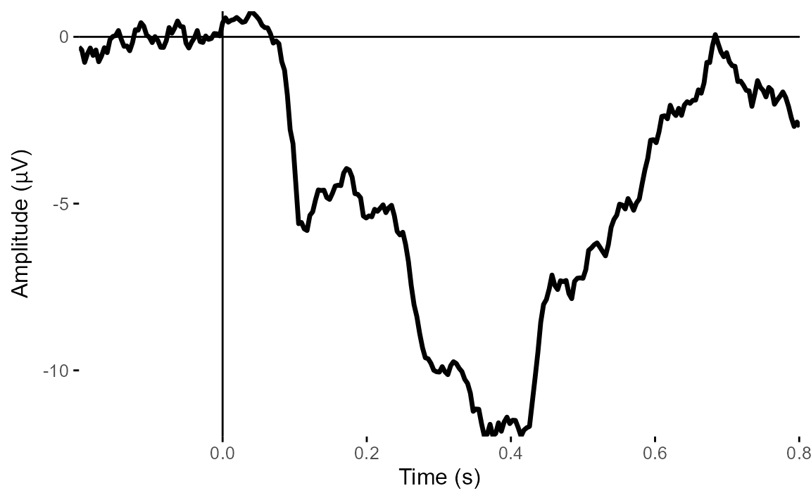
From these two plots, it’s very clear that there is a big vertical eye movement signal. But HEOG looks much less clear - the signals don’t show typical eye-movement patterns and look much more ERP-like.
Let’s restrict our butterly plot to the first 30 channels, which are the scalp channels.
plot_butterfly(
select(epoched_data, 1:30)
)## Creating epochs based on combinations of variables: participant_id Intact Type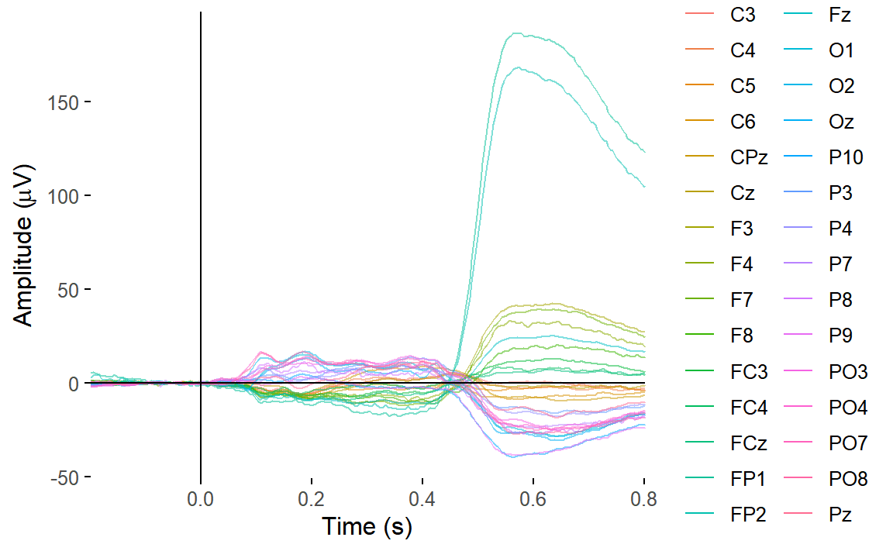
There are still a couple of channels clearly dominated by eye movements - likely channels FP1 and FP2, which are over the eyes. And we can clearly see the effect of the eye movements on the topography around that time.
## Creating epochs based on combinations of variables: participant_id Intact Type## Using electrode locations from data.## Removing channels with no location.## Plotting head r 95 mm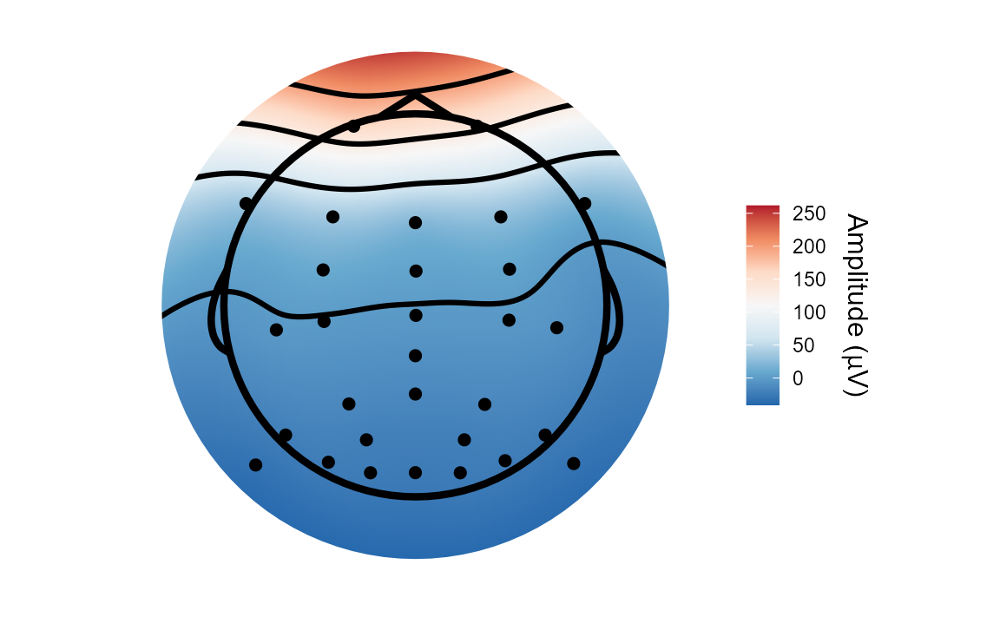
We’d probably want to do something about that - either removal of contaminated trials or some sort of eye movement correction using Independent Component Analysis
Artefact rejection
Independent Component Analysis
In the ERP Core, Independent Component Analysis is used to isolate and correct for artefactual contributions to the EEG signal from eye movements. They run ICA on the continuous data, after performing a few artefact rejection steps based on amplitude thresholds to remove particuarly low quality data segments, as well as removing data from between blocks.
We’ll do it a little differently - we’ve already arrived at our
epoched data, and will run ICA on that. We could do some artefact
rejection on the epoched data before running the ICA (for example, we
could use ar_FASTER() to automatically detect bad channels
and epochs), but this time we’ll skip that and go straight to ICA. We’ll
use the extended Infomax algorithm for our
decomposition. Note that since the data is average referenced, it is not
full rank - the signals are not fully linearly independent of
each other, but dependent on the reference signal. We’ll use
the pca argument to reduce our data to 32 components, one
fewer than the number of channels, and then run ICA.
ica_imax <- run_ICA(epoched_data,
pca = 32,
method = "infomax")## Reducing data to 32 dimensions using PCA.## Running extended-Infomax (ica).There are several interactive tools built in, like
view_ica() and browse_data(), that allow you
to visually inspect the results of the ICA decomposition, displaying
features such as topographies and ERPs. With experience, you will learn
to discriminate between different types of component. Some capture
genuine brain activity, while some capture artefacts. For this tutorial,
we will use an automatic method to help us detect eye movement related
components.
Automatically rejecting eye movement components
There are also some ar_* functions for detecting
particular artefactual types of component automatically. One of those is
ar_eogcor(). Given the decomposition and the original data,
this function searches for components that have a high correlation with
the eye channels. We construct bipolarized channels from the two HEOG
channels - HEOG_left and HEOG_right - and for
VEOG, the VEOG_lower and FP2 channels, since
there was no VEOG_upper.
high_cor <-
ar_eogcor(decomp = ica_imax,
data = epoched_data,
HEOG = c("HEOG_left", "HEOG_right"),
VEOG = c("VEOG_lower", "FP2"))## Estimated HEOG threshold: 0.64## Estimated VEOG threshold: 0.74## Components with high EOG correlation: Comp001
high_cor## [1] "Comp001"A lot of channels show some correlation with HEOG, but nothing particularly striking - horizontal eye movements are often much harder to separate than blinks or vertical eye movements, and are possibly spread across many components here.
For most components, the correlation was very low for VEOG. But Component 1 crosses the (automatically determined) threshold, so we should inspect it further. Let’s look at a few plots.
topoplot(ica_imax,
1)## Using electrode locations from data.## Removing channels with no location.## Plotting head r 95 mm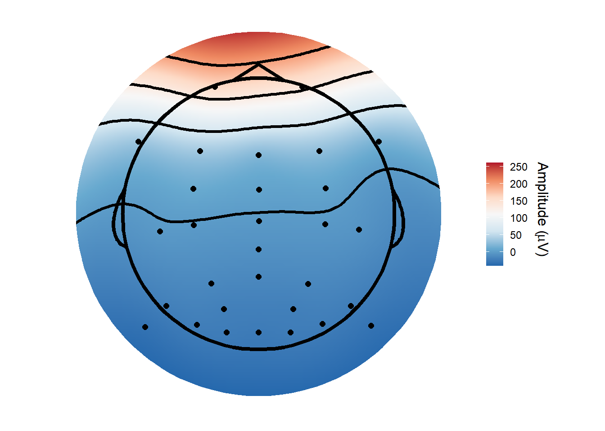
plot_timecourse(ica_imax,
1)## Creating epochs based on combinations of variables: participant_id Intact Type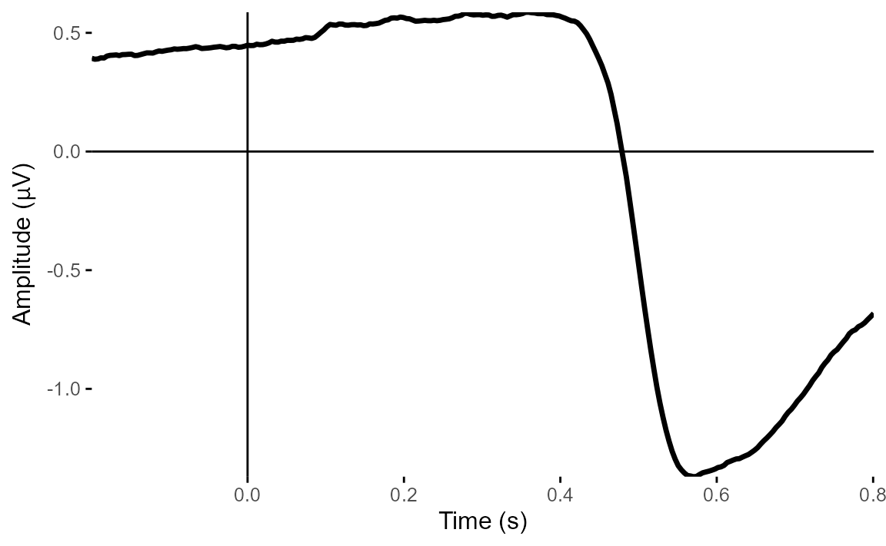
erp_image(ica_imax,
"Comp001")
The topoplot shows the classic vertical eye movement topography - large signal at frontal electrodes and a front-to-back gradient. The ERP seems to show this component captures an eye movement or blink toward the end of the trial, and this is also clear on the ERP image. These are late movements, after stimulus offset.
So having identified a strong candidate for a component that captures
eye movements, what next? Well, we can recreate the data
without that component using the apply_ica()
function!
We can either do that directly from the eeg_ICA object,
which includes all the relevant parts of the decomposition, or by
applying the weights from our ICA to another dataset. This is sometimes
useful - for example, sometimes ICA provides much better decompositions
on data filtered with a 1 Hz high-pass filter. But a 1 Hz high-pass
filter is much too strong to use for ERPs - it seriously messes with the
waveforms. So one possibility is to filter the data at 1 Hz, run ICA on
the filtered data, then apply the weights to a dataset with a more
reasonable high-pass filter, such as .1 Hz.
Here, we’ll just go ahead and reconstruct from the
eeg_ICA object directly. We specify which components to
remove, rather than which to keep, as that’s what we
typically want to do.
corrected_data <-
apply_ica(data = ica_imax,
comps = "Comp001")We can now plot our VEOG_lower and
HEOG_left channels again, to see what difference it
made.
plot_timecourse(
corrected_data,
electrode = "VEOG_lower",
baseline = c(-.1, 0)
)## Baseline: -0.1 - 0s## Creating epochs based on combinations of variables: participant_id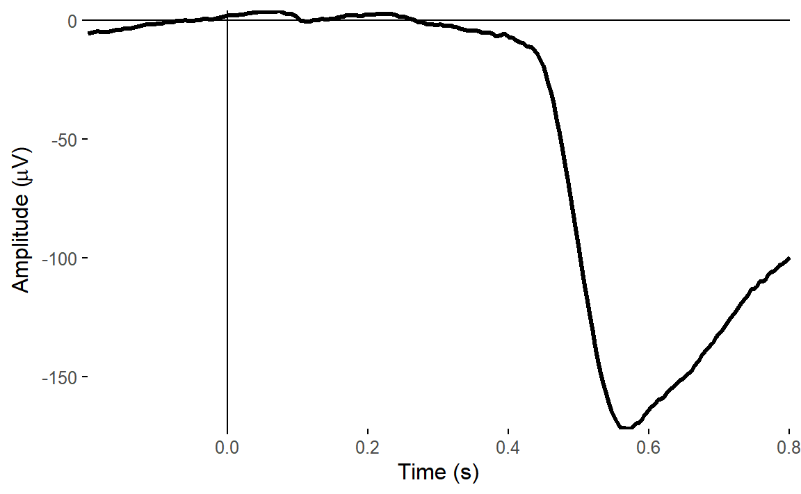
plot_timecourse(
corrected_data,
electrode = "HEOG_left",
baseline = c(-.1, 0)
)## Baseline: -0.1 - 0s
## Creating epochs based on combinations of variables: participant_id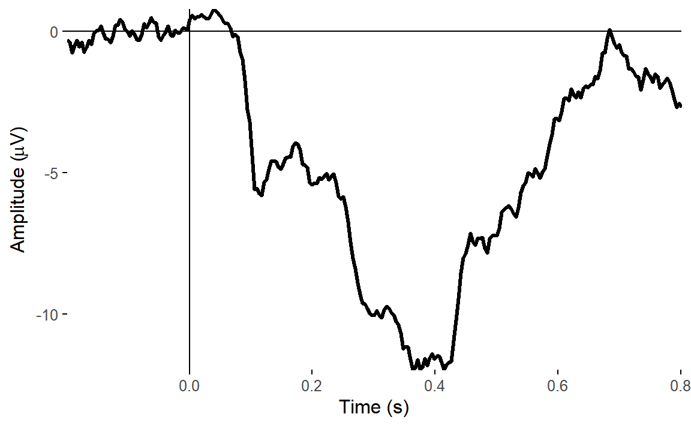
There was a big impact on the VEOG channel, but very little impact on HEOG. This is what we’d expect - the ICA clearly captured vertical eye movements, but didn’t find anything clear for horizontal eye movements.
Let’s have a look at the butterfly plot and topographies from our corrected data. We’ll baseline correct the data first.
corrected_data <- rm_baseline(corrected_data,
time_lim = c(-.1, 0))## Baseline: -0.1 - 0s
plot_butterfly(corrected_data)## Creating epochs based on combinations of variables: participant_id Intact Type
## Creating epochs based on combinations of variables: participant_id Intact Type## Using electrode locations from data.## Removing channels with no location.## Plotting head r 95 mm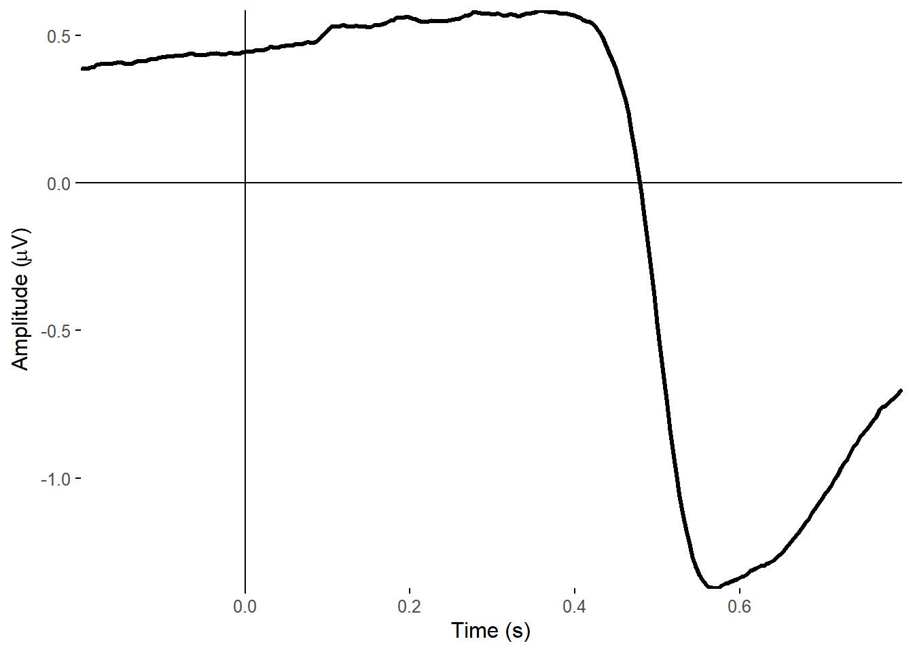
## Creating epochs based on combinations of variables: participant_id Intact Type## Using electrode locations from data.## Removing channels with no location.## Plotting head r 95 mm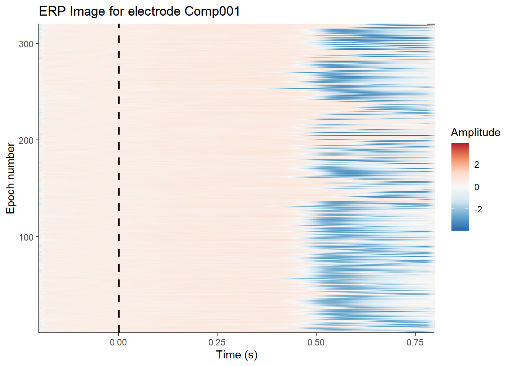
You can see a huge difference between the two. I’ve deliberately kept the colour range the same so that you can see the true extent of the difference. The large eye movement related artefacts seem to be mostly gone after correction. It’s not perfect - there is still some residual noise - but it still removed a huge amount of noise.
Now let’s see the topographies in the N170 window.
topoplot(corrected_data,
time_lim = c(.13, .15),
groups = c("Intact",
"Type"),
limits = c(-10, 10)) +
facet_grid(Intact ~ Type)## Creating epochs based on combinations of variables: participant_id Intact Type## Using electrode locations from data.## Removing channels with no location.## Plotting head r 95 mm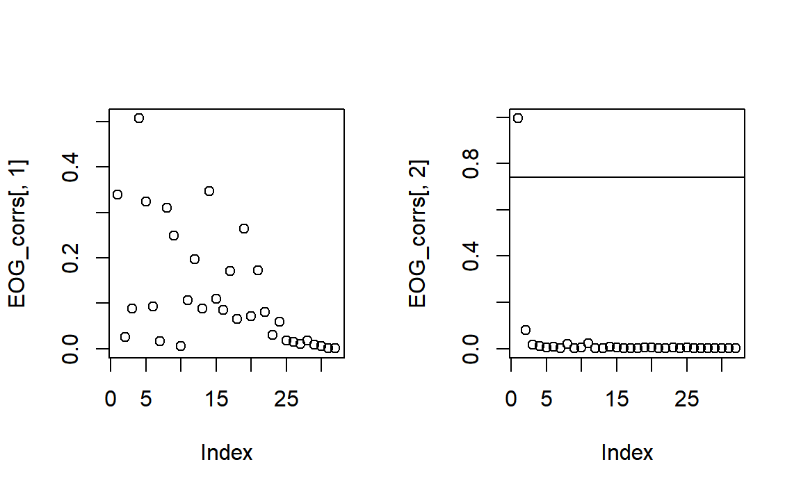
Oddly, the topographies in our period of interest might look a little worse at a glance, as now there seems to be small positive signal around the eye frontal channels. But that’s because a substantial negative signal from eye movements has been removed.
Automated rejection and correction of channels and epochs
As one last step, let’s try running the FASTER algorithm using
ar_FASTER(). This is an automated method of checking for a
variety of issues with signal quality: 1) It checks for globally bad
individual channels - i.e. channels that are consistently bad compared
to other channels across the whole recording - and removes or
interpolates those. 2) It checks for globally bad epochs - epochs which
are very noisy compared to other epochs - and removes those. 3) It also
checks for bad channels within each epoch, and interpolates those. This
is helpful because noise is frequently intermittent. A given channel
isn’t necessarily bad all the time - it may just be noisy on a few
epochs. By interpolating it during only those time periods, you preserve
the relatively clean data from that channel at other time periods.
Similarly, the noise on a given trial may be restricted to only a few
electrodes, so it is better to simply interpolate that electrode than
remove the entire trial.
## Excluding channel(s):HEOG_left HEOG_right VEOG_lower## Globally bad channels: P8## Coords missing for electrodes HEOG_left HEOG_right VEOG_lower## Globally bad epochs: 56 76 122 123 125 134 161 195 233 236 253 262## 226 of 308 epochs had at least one channel interpolated.## Max number of channels interpolated in one epoch: 3The algorithm picked out P8 as a globally bad channel, and interpolates it completely. It also picked out a number of epochs which could not be saved, removing them automatically. In addition, if found 220 epochs where it was worth interpolating some channels rather than removing the epoch entirely.
Comparing the original and corrected data
Let’s focus in on one specific channel. We can use the
plot_timecourse() function, and tell it which electrode we
want to plot. P10 is a good candidate for looking for a
face-specific N170 - it’s over posterior lateral occipital cortex, where
the Fusiform Face Area is located. We’ll focus in on a specific time
range from -.1 s to .3 s around stimulus onset, and we’ll do baseline
correction. With some ggplot2 magic, we’ll use different
colours for Cars and Faces, and different linetypes for Intact and
Scrambled images.
First, let’s look at the uncorrected data.
plot_timecourse(
epoched_data,
electrode = "P10",
mapping = aes(colour = Type,
linetype = Intact),
baseline = c(-.1, 0),
time_lim = c(-.1, .3)
) ## Baseline: -0.1 - 0s## Creating epochs based on combinations of variables: participant_id Type Intact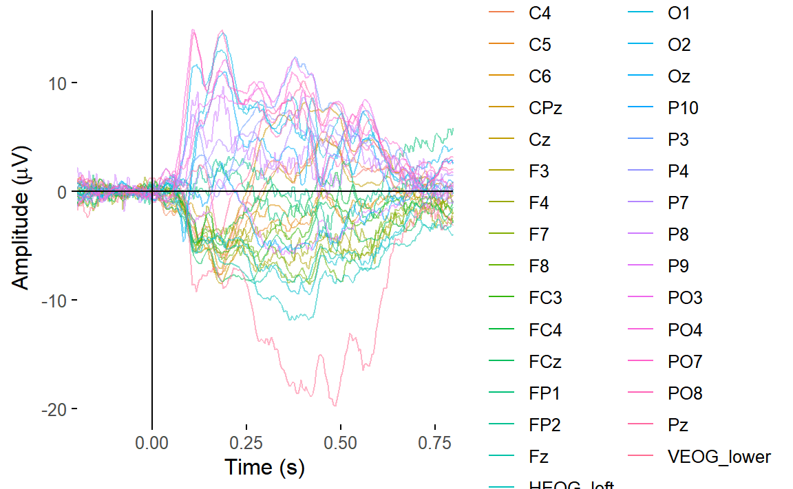
It’s quite noisy - it is from a single participant after all, and we haven’t done any artefact rejection yet.
But even with the noise, there’s a noticeable decline in amplitudes for both intact faces and cars - slightly later, for the latter - relative to scrambled faces and cars.
Let’s now compare the ERPs at P10 for our original, ICA corrected, and FASTER corrected data.
plot_timecourse(
epoched_data,
electrode = "P10",
mapping = aes(colour = Type,
linetype = Intact),
baseline = c(-.1, 0),
time_lim = c(-.1, .5)
) +
ggtitle("Original data")## Baseline: -0.1 - 0s## Creating epochs based on combinations of variables: participant_id Type Intact
plot_timecourse(
corrected_data,
electrode = "P10",
mapping = aes(colour = Type,
linetype = Intact),
baseline = c(-.1, 0),
time_lim = c(-.1, .5)
) +
ggtitle("ICA corrected data")## Baseline: -0.1 - 0s
## Creating epochs based on combinations of variables: participant_id Type Intact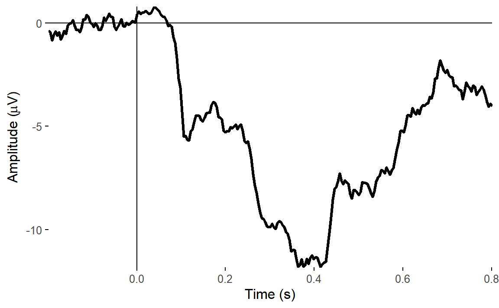
plot_timecourse(
autorej_data,
electrode = "P10",
mapping = aes(colour = Type,
linetype = Intact),
baseline = c(-.1, 0),
time_lim = c(-.1, .5)
) +
ggtitle("ICA and FASTER corrected data")## Baseline: -0.1 - 0s
## Creating epochs based on combinations of variables: participant_id Type Intact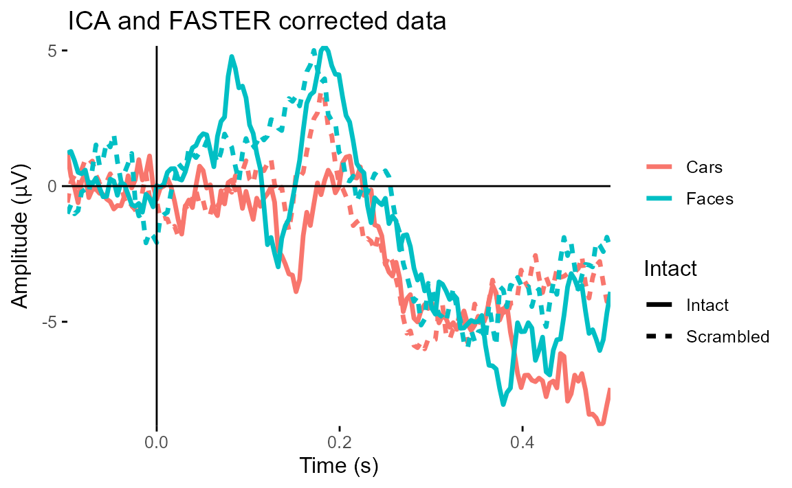
We can see straight away that our original data was heavily affected by eye movements, which are clearly in evidence towards the end of the ERP. ICA correction of eye movements had the biggest effect in reducing those artefacts.
What next?
This tutorial covered the processing of a single dataset, going from continuous data to an epoched, artefact-corrected dataset, ready for further use.
One thing you could do is convert the data to a
data.frame using as.data.frame(). This makes
it easy to get the data in a standard format for use with just about any
R function you could imagine.
head(
as.data.frame(corrected_data)
)## FP1 F3 F7 FC3 C3 C5 P3
## 1 -4.918215 2.607501 12.914789 -11.769973 -2.929508 -2.1002335 2.5623433
## 2 3.284854 -7.741160 10.040508 -11.393484 -3.676040 -0.8012886 0.2974999
## 3 7.634606 -12.420354 6.545192 -14.722391 -4.554828 -3.2928941 0.3563943
## 4 9.557865 -13.166525 5.546836 -12.864380 -5.550610 -2.9464081 -2.8844542
## 5 1.271142 -19.406360 3.433216 -5.995284 -1.928202 1.6790618 -3.3928845
## 6 -7.672153 -7.273593 7.844320 -3.868522 1.391638 3.6181119 -3.6480824
## P7 P9 PO7 PO3 O1 Oz Pz
## 1 1.1209619 10.732692 -0.1742992 2.019453 4.2239398 4.58045020 -0.1503262
## 2 0.0798196 7.791858 -2.3630911 -1.259310 -0.3648448 -2.54681613 -2.8521538
## 3 -0.0636548 7.398417 -3.7858564 -2.289407 -1.8346870 -0.01300358 -3.4383305
## 4 -0.4540354 6.381576 -5.2486966 -2.143878 -1.1645908 2.77910278 -1.7911478
## 5 -3.8973024 3.147973 -6.7718674 -2.240591 -2.0161813 1.40230432 -0.9932277
## 6 -4.3395225 3.598482 -7.7504763 -3.881101 -2.5397884 -1.35154112 -2.2447011
## CPz FP2 Fz F4 F8 FC4 FCz
## 1 -3.771159 9.16061050 -8.275691 -0.4721051 8.639158 -9.5193433 -11.018538
## 2 -4.293270 4.40599262 -6.825932 6.4610650 8.733601 1.1439558 -7.681389
## 3 -5.152885 3.05625549 -3.748772 0.1227696 12.370066 2.0688119 -3.650893
## 4 -5.321949 0.07792673 -2.584166 4.6348850 10.993883 0.1471320 -3.178098
## 5 -4.817042 1.56222111 -2.148851 6.8607124 3.824447 -0.3889318 -3.249116
## 6 -4.475702 6.05525628 -2.267183 -0.1683632 8.466212 -3.1855276 -1.895252
## Cz C4 C6 P4 P8 P10 PO8
## 1 -9.593433 -11.549220 -8.803203 -7.1652201 1.1361546 2.435942 0.3897937
## 2 -7.989438 -6.892331 -5.171625 -7.4373582 10.4136403 10.624990 -4.3656774
## 3 -6.701339 -4.707480 -4.792048 -5.0186656 -0.1776135 13.001121 -0.1254546
## 4 -6.221984 -5.746008 -7.767344 -3.9501789 -2.1392469 7.197405 3.2033713
## 5 -6.148713 -4.858505 -2.197561 -1.9902390 6.8917263 10.211455 3.5230553
## 6 -5.603202 -3.039225 2.832010 -0.4929733 -11.2457749 11.712352 1.2432508
## PO4 O2 HEOG_left HEOG_right VEOG_lower time epoch
## 1 -1.7650513 0.3317207 16.156146 6.181929 8.781936 -0.1992188 1
## 2 -3.7886754 -5.0099955 12.521743 5.957762 10.696589 -0.1953125 1
## 3 -2.8131917 -1.8750412 9.804172 12.220627 10.600356 -0.1914062 1
## 4 -0.9658825 2.6846994 12.959973 9.817942 10.106985 -0.1875000 1
## 5 2.1369327 2.9971658 13.091465 4.949168 5.458813 -0.1835938 1
## 6 0.5209173 -3.0606154 14.988816 8.377120 9.354812 -0.1796875 1
## participant_id recording event_type Intact Type
## 1 sub-003 sub-003_task-N170_eeg 56 Intact Cars
## 2 sub-003 sub-003_task-N170_eeg 56 Intact Cars
## 3 sub-003 sub-003_task-N170_eeg 56 Intact Cars
## 4 sub-003 sub-003_task-N170_eeg 56 Intact Cars
## 5 sub-003 sub-003_task-N170_eeg 56 Intact Cars
## 6 sub-003 sub-003_task-N170_eeg 56 Intact CarsYou can also request that the data be output directly in long format.
head(
as.data.frame(corrected_data,
long = TRUE)
)## # A tibble: 6 × 11
## time epoch electrode amplitude x y participant_id recording
## <dbl> <dbl> <chr> <dbl> <dbl> <dbl> <chr> <chr>
## 1 -0.199 1 FP1 -4.92 -30.6 88.9 sub-003 sub-003_task-N17…
## 2 -0.199 1 F3 2.61 -40.9 43.9 sub-003 sub-003_task-N17…
## 3 -0.199 1 F7 12.9 -84 50.5 sub-003 sub-003_task-N17…
## 4 -0.199 1 FC3 -11.8 -45.8 17.6 sub-003 sub-003_task-N17…
## 5 -0.199 1 C3 -2.93 -45.3 -7.99 sub-003 sub-003_task-N17…
## 6 -0.199 1 C5 -2.10 -68.9 -12.2 sub-003 sub-003_task-N17…
## # ℹ 3 more variables: event_type <dbl>, Intact <chr>, Type <chr>Of course, this includes data for every single trial. If you just
wanted the ERPs, you could first average the epoched data to create an
eeg_evoked object:
eeg_average(corrected_data)## Creating epochs based on combinations of variables: participant_id Intact Type## Evoked EEG data
##
## Number of channels : 33
## Epoch limits : -0.199 - 0.801 seconds
## Electrode names : FP1 F3 F7 FC3 C3 C5 P3 P7 P9 PO7 PO3 O1 Oz Pz CPz FP2 Fz F4 F8 FC4 FCz Cz C4 C6 P4 P8 P10 PO8 PO4 O2 HEOG_left HEOG_right VEOG_lower
## Sampling rate : 256 HzBy default, this will give you an ERP for each unique condition,
based on the variables stored in the epochs().
From here, you’d most likely want to combine it with other
datasets to create group level data. You can of course do that by
converting them all into their own data.frame and combining
them afterwards. But you can also combine the individual
eeg_epochs objects into eeg_group objects.
We’ll cover that in a later tutorial.